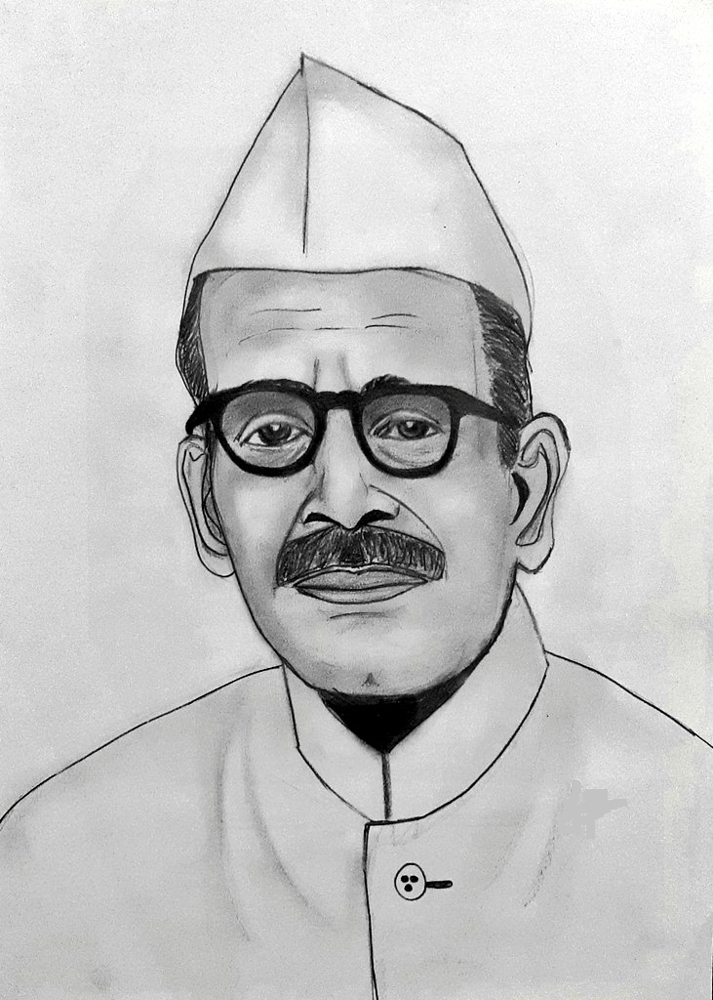

Gulzarilal Nanda was an Indian Politician and Economist who specialized in labour issues. He was the Interim Prime Minister of India for thirteen day stints following the deaths of Jawaharlal Nehru in 1964. His terms ended after the ruling Indian National Congress's Parliamentary party elected a new Prime minister. He was awarded the Bharat Ratna, India's highest Civilian Award, in 1997. Gulzarilal Nanda worked as a research scholar on labour problems at Allahabad University (1920–1921), and became a professor of Economics at National College in Bombay (Mumbai) in 1921.
The same year, he joined the Indian Non-Cooperation Movement against the British Raj.
In 1922, he became secretary of the Ahmedabad Textile Labour Association where he worked until 1946. He was imprisoned for Satyagraha in 1932, and again from 1942 to 1944.He was honored with "Proud Past Alumni" in the list of 42 members, from "Allahabad University".
He lived a very simple life, with no personal property at the time of his death. He never allowed politics to influence his family.
